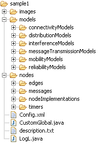

Sinalgo - Simulator for Network Algorithms |
|
|
Sinalgo ProjectOnce Sinalgo is installed, you may run several independent simulations with the same installation. To distinguish between the different simulations, the files belonging to one simulations are grouped in a project. This includes the project specific configurations and the actual network implementations. At startup of the framework, Sinalgo asks which project to use and then initializes as defined in the chosen project.Note: It is recommended to generate a project for each algorithm one simulates. However, this often results in quite a lot of common code, e.g. models that are used for several projects. Instead of copying this code to all projects, it is preferred to create a dummy project that holds this common code from where all other projects access it. In fact, the defaultProject shipped with Sinalgo is such a dummy project and gathers quite some default implementations that may be handy for you. Creating a ProjectFrom the view of a developer, a project is nothing else than a folder located in the src/projects/ folder of Sinalgo. The name of the project is given by the name of this folder. The content of the project folder for a project named sample1 may look as following: Project ContentThe project folder contains three sub-folders:
Each project contains the four following files in the root directory:
|
|||||||||||||||||||||||
© Distributed Computing Group 
|